Module 2 lab - GSEA
Presenter: Ruth Isserlin
Introduction
This practical lab contains one exercise. It uses GSEA to perform a gene-set enrichment analysis.
Goal of the exercise
Learn how to run GSEA and explore the results.
Data
The data used in this exercise is gene expression (transcriptomics) obtained from high-throughput RNA sequencing of Ovarian Serous Cystadenocarcinoma samples. This cohort was previously stratified into four distinct expression subtypes PMID:21720365 and a subset of the immunoreactive and mesenchymal subtypes are compared to demonstrate the GSEA workflow.
How was the data processed?
Gene expression from the TCGA Ovarian serous cystadenocarcinoma RNASeq V2 cohort was downloaded on 2015-05-22 from cBioPortal for Cancer Genomics.
Differential expression for all genes between the mesenchymal and immunoreactive groups was estimated using edgeR.
The R code used to generate the data and the rank file used in GSEA is included at the bottom of the document in the Additional information section.
Background
The goal of this lab is to:
- Upload the 2 required files into GSEA,
- Adjust relevant parameters,
- Run GSEA,
- Open and explore the gene-set enrichment results.
The 2 required files are:
- a rank file (.rnk)
- a pathway definition file (.gmt).
Rank File
To generate a rank file (.rnk), a score (-log10(pvalue) * sign(logFC)) was calculated from the edgeR differential expression results. A gene that is significantly differentially expressed(i.e associated with a very small pvalue, close to 0) will be assigned a high score.
The sign of the logFC indicates if the gene has an expression which is higher in mesenchymal (logFC > 0, the score will have a + sign) or lower in mesenchymal (logFC < 0, the score will have a - sign). It is used to rank the genes from top up-regulated to top down-regulated (all genes have to be included).
The rank file is going to be provided for the lab, you don’t need to generate it.
How to generate a rank file.
Calculation of the score


Generation of the rank file
select the gene names and score columns and save the file as tab delimited with the extension .rnk

Pathway defintion file
The second file that is needed for GSEA is the pathway database, a file with the .gmt extension. The pathway database (.gmt) used for the GSEA analysis was downloaded from http://baderlab.org/GeneSets. This file contains gene-sets obtained from MsigDB-c2, NCI, Biocarta, IOB, Netpath, HumanCyc, Reactome and the Gene Ontology (GO) databases.
You don’t need to perform this step for the exercise, the .gmt file will be given to you.
Please note that gmt files from October 2020 - May 2021 currently have an issue created during the build and need to be fixed
Go to:
- http://download.baderlab.org/EM_Genesets/
- click on September_01_2020/
- Click on Human/
- Click on symbol/
- save the Human_GOBP_AllPathways_no_GO_iea…gmt file on your computer
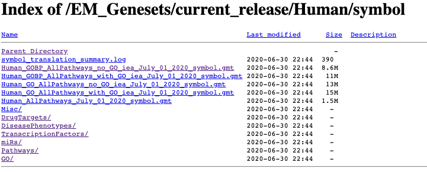
The .gmt is a tab delimited text file which contains one gene-set per row. For each gene-set (row), the first 2 columns contain the name and the description of the gene-set and the remaining columns contain the list of genes included in the gene-set. It is possible to create a custom gene-set using Excel or R.
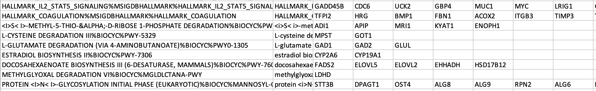
GSEA performs a gene-set enrichment analysis using a modified Kolmogorov-Smirnov statistic. The output result consists of summary tables displaying enrichment statistics for each gene-set (pathway) that has been tested.
Start the exercise
Before starting this exercise, download the 2 required files:
Right click on link below and select “Save Link As…”.
Place it in the corresponding module directory of your CBW work directory.
Step1.
Launch GSEA by double clicking on the installed program icon.
If GSEA won’t launch on MacOS.
Follow instructions specified on download page: * 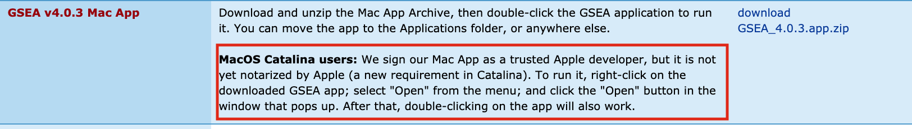
-
If you see this error message:
-
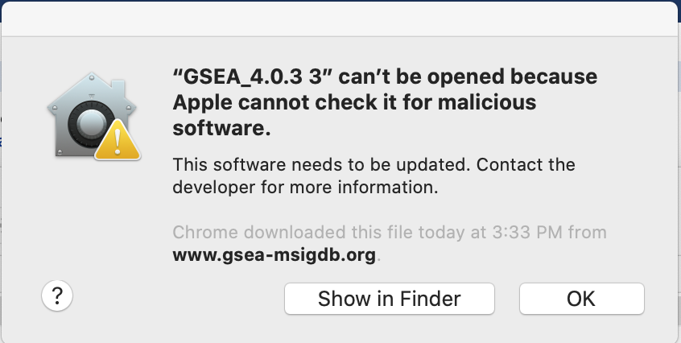
-
Open Settings -> Security & Privacy
-
Click on “Open Anyways”
-
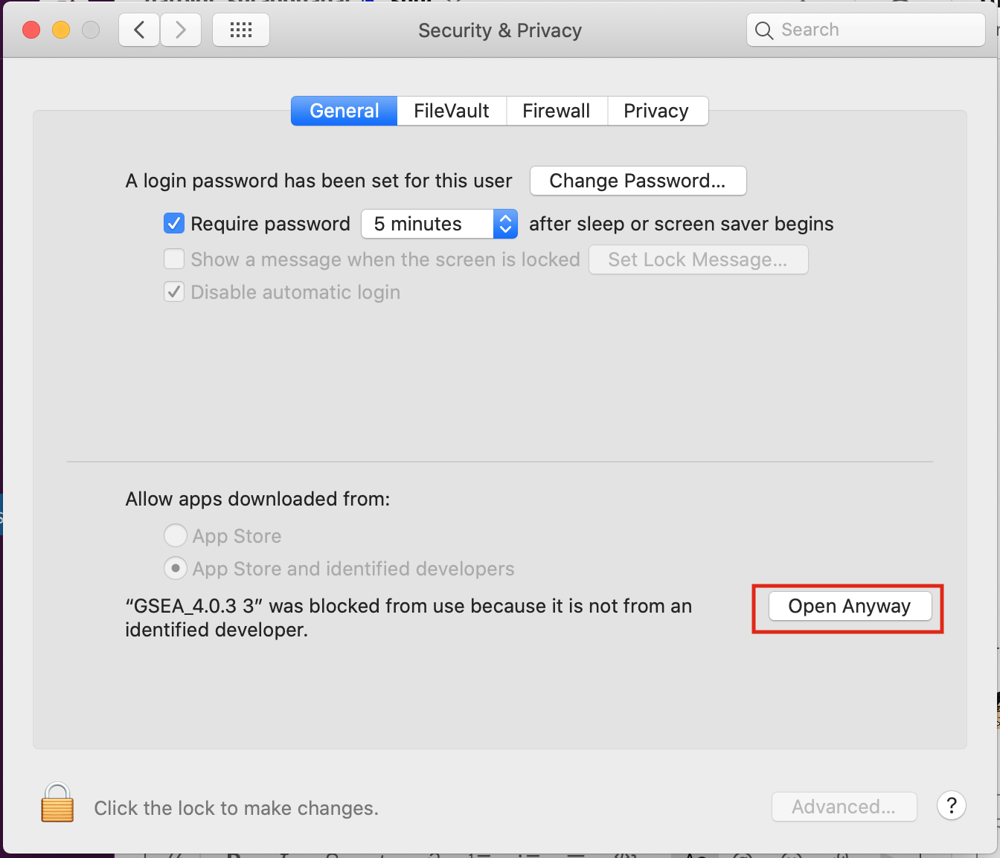
Step 2.
Load Data
2a. Locate the ‘Load data’ icon at the upper left corner of the window and click on it.

2b. In the central panel, select ‘Method 1’ and ‘Browse for files’. A new window pops up.

2c. Browse your computer to locate the 2 files : Human_GOBP_AllPathways_no_GO_iea_September_01_2020_symbol.gmt and MesenchymalvsImmunoreactive_edger_ranks.rnk.
2d. Click on Open. A message pops us when the files are loaded successfully.
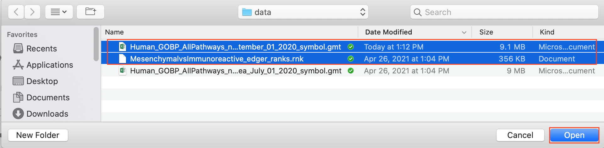
2e. Click on OK.
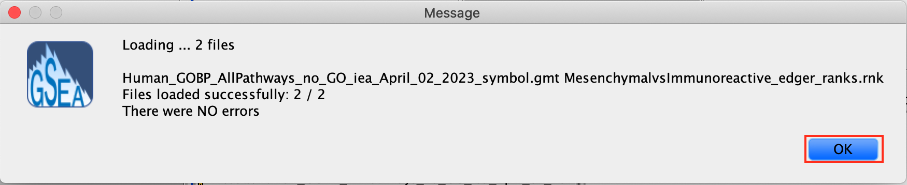
Alternatively, you can choose Method 3 to drag and drop files here; you need to click on the Load these files! button in this case.
Step3.
Adjust parameters
3a. Under the Tools menu select GseaPreRanked.

3b. Run GSEA on a Pre-Ranked gene list tab will appear.
Specify the following parameters:
3c. Gene sets database -
- click on the radio button (…) located at the right of the blank field.
- Wait 5-10sec for the gene-set selection window to appear.
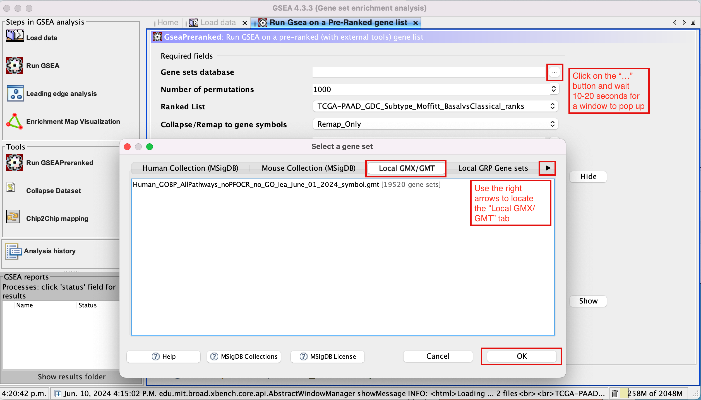
- Use the right arrow in the top field to see the Gene matrix (local gmx/gmt) tab.
- Click to highlight Human_GOBP_AllPathways_no_GO_iea_September_01_2020_symbol.gmt.
- click on OK at the bottom of the window.
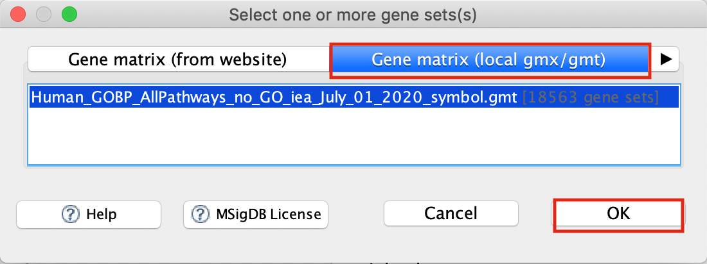
- Human_GOBP_AllPathways_no_GO_iea_September_01_2020_symbol.gmt is now visible in the field corresponding to Gene sets database.
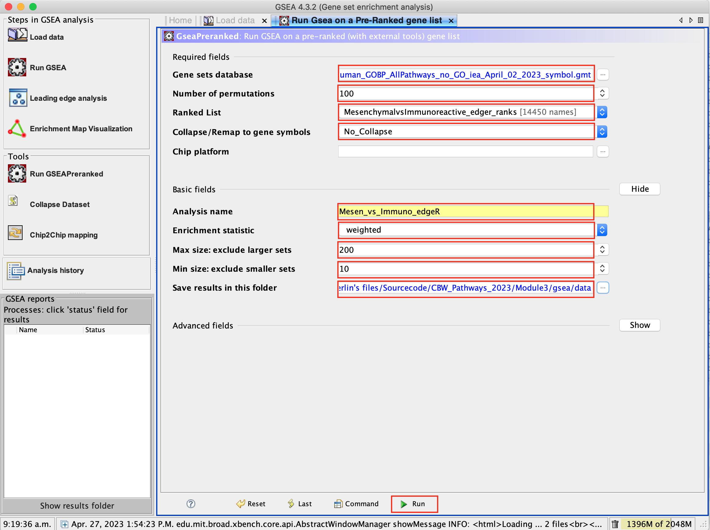
3d. Number of permutations - 100. The number of permutations is the number of times that the gene-sets will be randomized in order to create a null distribution to calculate the FDR.
Use 2000 when you do it for your own data outside the workshop.
3e. Ranked list - select by clicking on the arrow and highlighting rank file.
3f. Collapse/Remap to gene symbols - Change to No_collapse. (Our rank file already contains the gene symbols so we don’t need GSEA to try and convert probe names to gene symbols)
3g. Click on Show button next to Basic Fields to display extra options.
3h. Analysis name – change default my_analysis to name specific to analysis for example Mesen_vs_Immuno_edgeR. GSEA will use your specified name as part of the name of the results directory it creates.
3i. Max size: exclude larger sets – By default GSEA sets the upper limit to 500. In this protocol, the maximum is set to 200 to decrease some of the larger sets in the results.
3j. Min size: exclude smaller sets – By default GSEA sets the lower limit to 15. In this protocol, the minimum is set to 10 to increase some of the smaller sets in the results.
3k. Save results in this folder – navigate to where you want GSEA to put the results folder. By default GSEA will put the results into the directory gsea_home/output/[date] in your home directory.
set Enrichment Statistics to p2 if you want to add more weight on the most top up-regulated and top down-regulated.
P2 is a more stringent parameter and it will result in less gene-sets significant under FDR <0.05.
Step 4.
Run GSEA
4a. Click on Run button located at the bottom right corner of the window.
Expand the window size if the run button is not visible
4b. On the panel located on the left side of the GSEA window, the bottom panel called the GSEA report table will show that it has created a process with a message that it is Running.


On completion the status message will be updated to Success….

There is no progress bar to indicate to the user how much time is left to complete the process. Depending on the size of your dataset and compute power a GSEA run can take from a few minutes to a few hours. To check on the status of the GSEA run in the bottom left hand corner you can click on the + (red circle in below Figure) to see the updating status. Printouts in the format shuffleGeneSet for GeneSet 5816/6878 nperm: 100 indicate how many permutations have been done (5816) out of the total that need to be performed (6878).
if the permutations have been completed but the status is still running, it means that GSEA is creating the report
Java Heap Space error. If GSEA returns an error Java Heap space it means that GSEA has run out of memory. If you are running GSEA from the webstart other than the 4GB option then you will need to download a new version that allows for more memory allocation. The current maximum memory allocation that the GSEA webstart allows for is 4GB. If you are using this version and still receive the java heap error you will need to download the GSEA java jar file and launch it from the command line as described in step 1.
Step 5.
Examining the results
5a. Click on Success to launch the results in html format in your default web browser.
If the GSEA application has been closed, you can still see the results by opening the result folder and clicking on the index file – index.html. (see screenshot below). The first phenotype corresponds to gene-sets enriched in genes up-regulated in the mesenchymal subtype. The second phenotype corresponds to gene-sets enriched in genes up-regulated in the immunological phenotype.
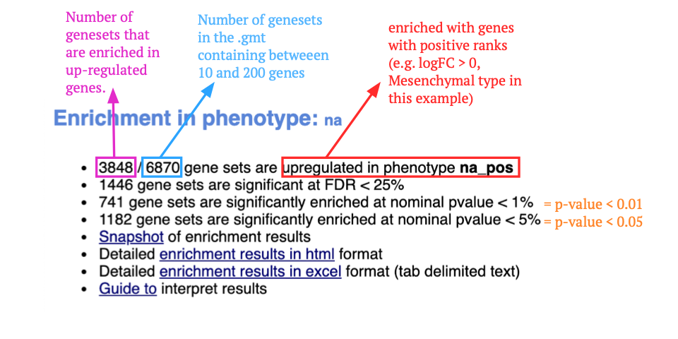
When examining the results there are a few things to look for:
5b. Check the number of gene-sets that have been used for the analysis.
A small number (a few hundred genesets if using baderlab genesets) could indicate an issue with identifier mapping.
5c. Check the number of sets that have FDR less than 0.25 – in order to determine what thresholds to start with when creating the enrichment map. It is not uncommon to see a thousand gene sets pass the threshold of FDR less than 0.25. FDR less than 0.25 is a very lax threshold and for robust data we can set thresholds of FDR less than 0.05 or lower.
5d. Click on Snapshots to see the trend for the top 20 genesets. For the positive phenotype the top genesets should show a distribution skewed to the left (positive) i.e. genesets have predominance of up-regulated genes. For the negative phenotype the top geneset should be inverted and skewed to the right (negative) i.e. geneset have predominance of down-regulated genes.
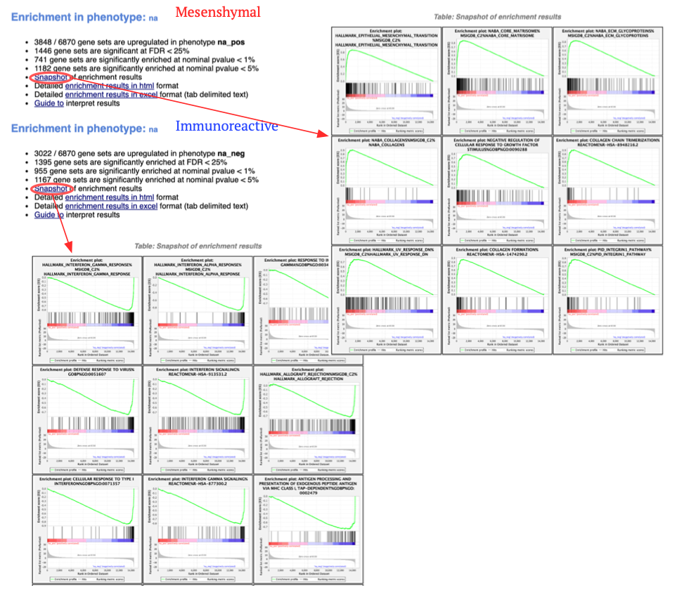
5e. Explore the tabular format of the results.
Mesenchymal
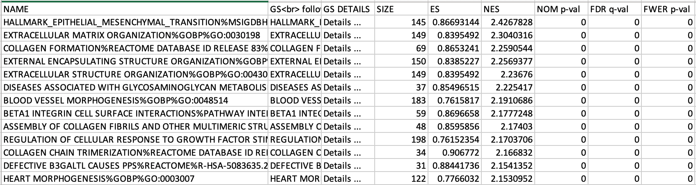
Additional information
More on processing the RNAseq using EdgeR and generate the .rank file
More on which .gmt file to download from the Baderlab gene-set file, select current release, Human, symbol, Human_GOBP_AllPathways_no_GO_iea_….gmt